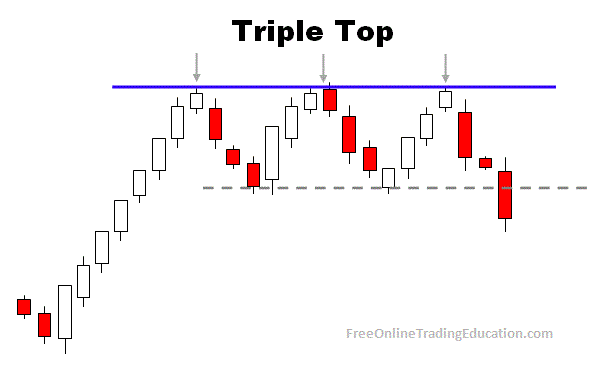

How to trade the triple top pattern.
The triple top pattern is formed after an uptrend. It will form three same highs, and two neckline supports.

What is the psychology behind the triple top pattern
In the triple top pattern it is showing that price action tried to make new highs three times but failed. The neckline support is
showing that it couldnt make a new lower two times. With both of these areas being created it is showing that the momentum is starting to slow
down.
How to trade the triple top pattern and be profitable
1) The first way to trade the triple top pattern is to sell at resistance and buy at the neckline. In order to sell the resistance you must wait for it to
form first. When it returns back we can look to sell and take profits at the neckline, and We can look to do this trade two times.
2) The second way to trade the triple top pattern is to wait on a change of character. after the three tops were formed and the two necklines have been formed
we want to see price action break below the neckline of this triple top. When it returns to the the previously formed neckline we than look to go short on this trade.